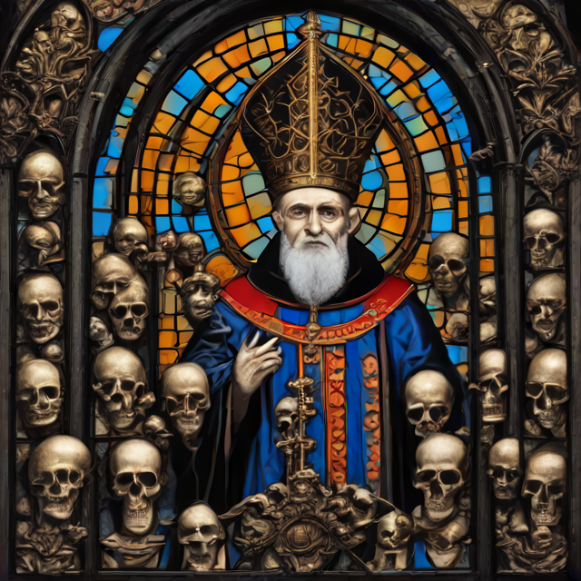
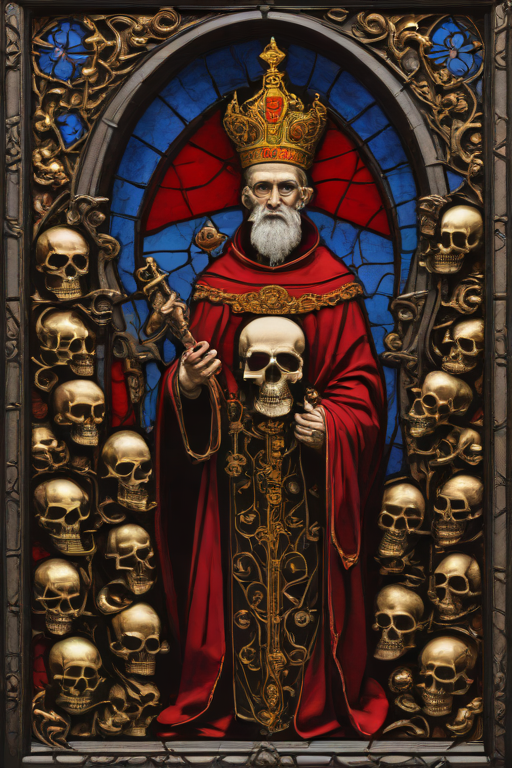
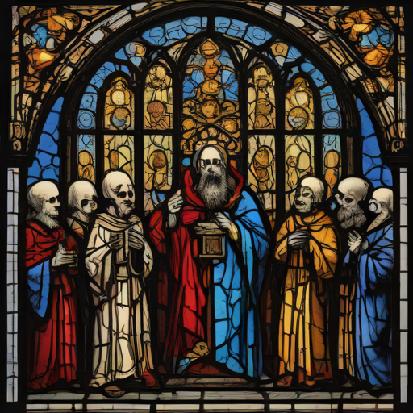
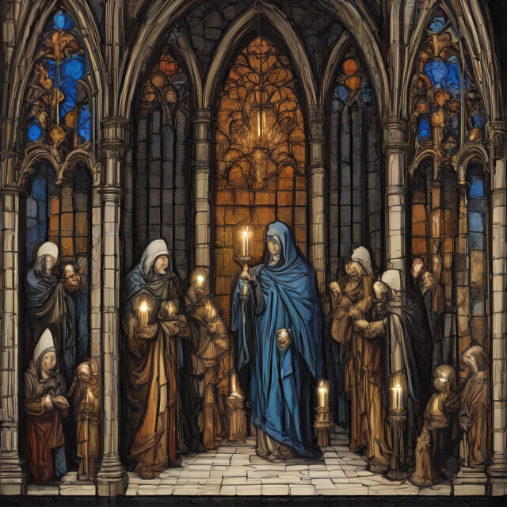
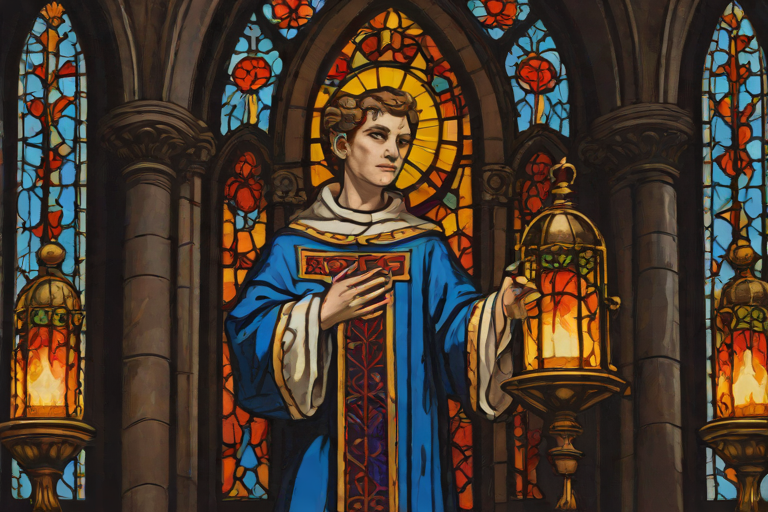
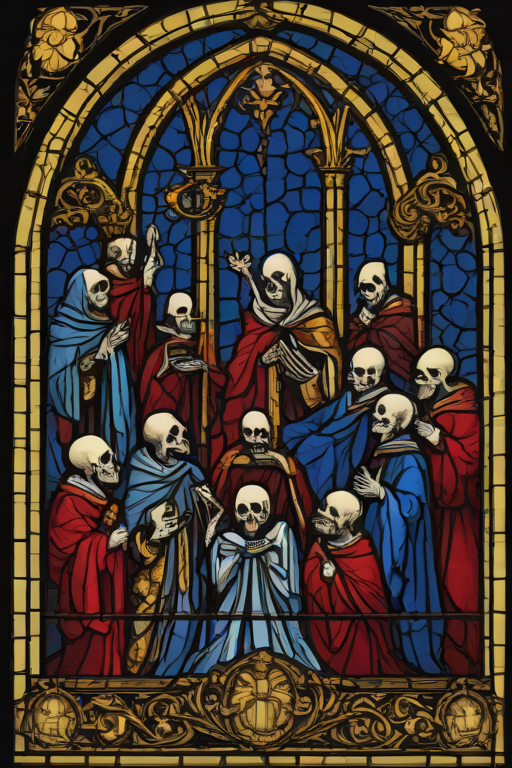
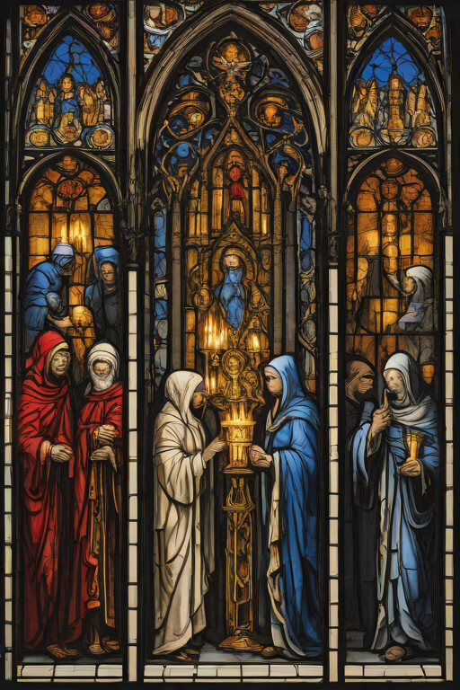
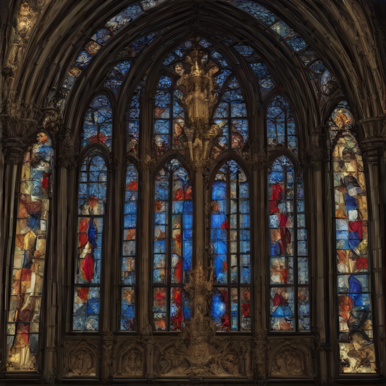

Someone is always being carried, blessed, or enthroned among the skulls. The choir sings with its mouths too wide. Fall in line — the march does not stop for you, and the saints have been waiting.

Cat. No. V.5.01The Bone CathedraLatent diffusion, single pass · AI Slop, 2026

Cat. No. V.5.02Crowned in AshLatent diffusion, single pass · AI Slop, 2026

Cat. No. V.5.03The Slow MarchLatent diffusion, single pass · AI Slop, 2026

Cat. No. V.5.04The OfferingLatent diffusion, single pass · AI Slop, 2026

Cat. No. V.5.05Three IntercessorsLatent diffusion, single pass · AI Slop, 2026Cat. No. V.5.06Herald, WingedLatent diffusion, single pass · AI Slop, 2026

Cat. No. V.5.07Blessing, ReceivedLatent diffusion, single pass · AI Slop, 2026Cat. No. V.5.08The Faithful, AssembledLatent diffusion, single pass · AI Slop, 2026

Cat. No. V.5.09CommunionLatent diffusion, single pass · AI Slop, 2026

Cat. No. V.5.10VespersLatent diffusion, single pass · AI Slop, 2026